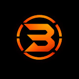
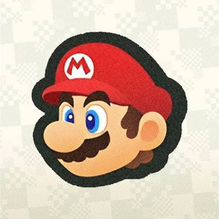

O launcher não traz o jogo, nem keys, nem firmware. Escolha a pasta que tem o seu prod.keys (+ title.keys) e o seu dump do Super Mario Bros. Wonder. O celular lê os arquivos onde estão e extrai para a pasta própria do app.

xxxhdpi · 192icone.jpeg, 447×447): só aparece na tela inicial do Android, nunca dentro do launcher ou do jogo.